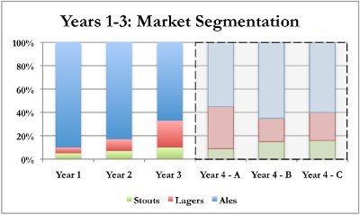
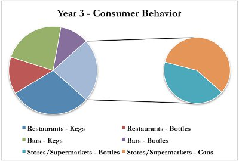

Megapolis is continuing to change for the better. You have heard that the community is predicted to become a technological center for the region. Further, the city hall recently approved a three-year project to create a new and larger highway to make it easier for people to commute to Megapolis for work and to increase trade in the region. With this momentum, the newspaper recently wrote an article which suggested that the population of Megapolis could grow 5 – 8% over the next few years and per capita income is expected to continue increasing. This would lead to overall growth in the beer market, which could lead to increased sales for all breweries even if market shares remained constant.
While the beer market may be growing overall, there are some interesting changes in the market segmentation. In Year 3, lagers grew to account for 23% of the beer market. For the most recent two-year period, this represents over 350% growth for this market segment. Stouts have also continued to grow, though at a more tempered pace than lagers. Reporters have begun to ask probing questions of ale brewers about the unexpected growth in demand for these two categories. Some ale producers call it a temporary change and state that consumers will soon revert back to primarily consuming ale. Other ale producers are building out their lager brewing capacity to expand their product lines, indicating a long-term belief in lagers as a significant revenue opportunity.
At the request of your staff, you purchased three new market reports from the same three companies that provided the reports you analyzed when you started your brewery. While none of the companies predict the market segmentation returning to historic levels, they do not agree on how quickly the segments will continue to shift. Company A forecasts another large increase in lagers, while Company B and Company C suggest more modest changes in the coming year. The following chart illustrates their forecasts.

Regardless of how quickly the lager market grows, the shrinking ale market means that all the existing ale producers will be fiercely competitive to maintain their share of the market. Given its fragmentation, existing ale brewers can expect to hold 5-8% of the market. Further, there will be increased competition in the lager market, as other breweries expand their capacities to include lager brewing. Market sources suggest that breweries that have already been producing lager for a few years will be much better situated to continue capturing market share. Depending on your position in the market during the previous year, you may be able to capture up to 14% of the market. Taking into account this information and your decision regarding new machinery purchasing, you need to prepare your production forecast for this year.
As the technology companies have begun to thrive, many of their employees have experienced pay raises. This has led to an increased tendency to dine out at restaurants and bars, which is also leading to the construction of new restaurants and bars in anticipation of continued demand. While this shifts the overall location of beer consumption, trends noted in previous years concerning packaging type relative to the type of beer are remaining somewhat static. Using the data below to predict consumer preference in the coming year – and keeping in mind the preference to drink lagers from a keg or bottle rather than a can – you need to decide on how you will package your produced beer this year.
